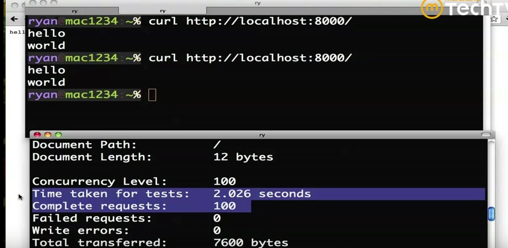
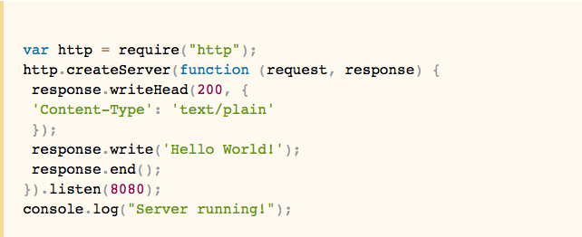

What the heck is Node.js?
If you are a student in the web development field like myself, you may
be asking yourself this question (among many others) when wading through the vast ocean of "web dev" jargon. Hopefully this blog will provide you with a little more insight into what Node.js is, and ease that feeling of sinking in an ocean of foreign knowledge.
Essentially, Node.js is library that acts as an interface for you as a user to be able to access Google's V8 JavaScript Runtime (a fancy way of saying a really fast JavaScript interpreter). Node allows you to download V8 and embed it for web servers. It is a command line tool made for the server side of coding with JavaScript - but is not truly JavaScript.
That's great, but so what?
Node.js is actually pretty interesting because it behaves like the energizer bunny - it never stops. Node is able to idle between commands and requests, but it never comes to a stop. This is unique because while the connection is idle, that means a new connection (or many) can be added. This behavior is what's called "non-blocking IO" - IO meaning "input/output".
Node handles concurrency of connections pretty well because it never waits for anything, and actually tends to perform better -especially under high concurrency- than a traditional web server.

This screenshot above shows how Node handles those high concurrency levels really well (100 connections were established in approximately 2 seconds without any issues).
Node is also different in how information is returned while using it. Say for example that you are working with a SQL database and run a simple script that will return some unkown number of results to you. In this scenario, let's assume that you are not super familiar with the database, so you won't know how many rows you're expecting to be returned.
With Node, instead of using up valuable server memory to buffer large amounts of data (your results) being returned from the script, the results can be delivered back to you in chunks so that server memory isn't wasted, and less time is used to complete the request. Pretty neat, huh?
Node also comes bundled with this tool called NPM - short for Node Package Manager.NPM is really nifty, especially when using other utilities such as Bower, Yeoman, and Grunt since you can easily install all three of those tools from the command line using a command with npm.
How about an easy example?

Firstly, this is not a code fragment that I came up with on my own, so credit should be given to James Bruce.
This is a really nice, simple example for someone looking at Node for the first time to see analyzed.
What's happening in the first line is that a http module is being added to the project. The ".createServer" is creating a server which will be passed an anonymous function in as a parameter. For every new connection that's made (remember the concurrency we talked about earlier?) – this function will be called.
This function accepts two arguments – request and response. Request contains the request parameters from the user and response is what we’ll use to send stuff back to the user. The response object will write a line back to the user with the HTTP code 200 (“ok”) and content type, and will write a “Hello World!” message, then end the response.
In the last two lines, the server is being told to listen on port 8080 for incoming requests, and to output a quick message to the the command line that will tell us if it's running or not.
Posted by Megan Balcom on February 24, 2016